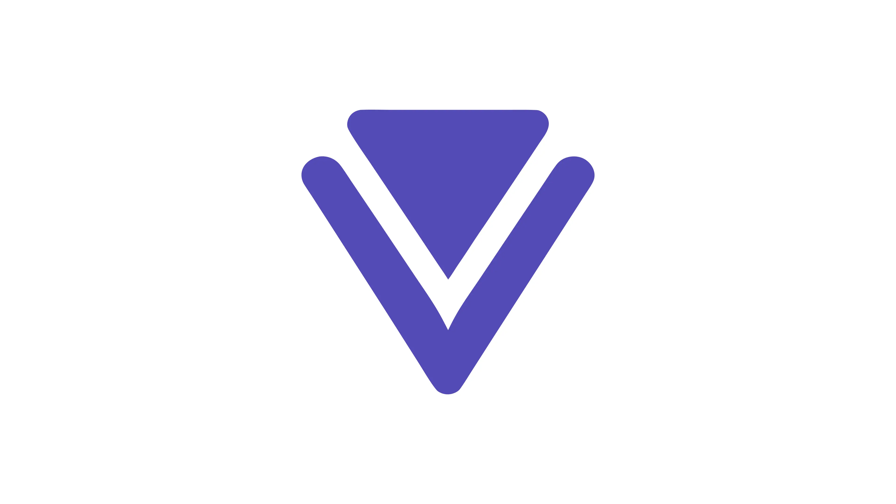
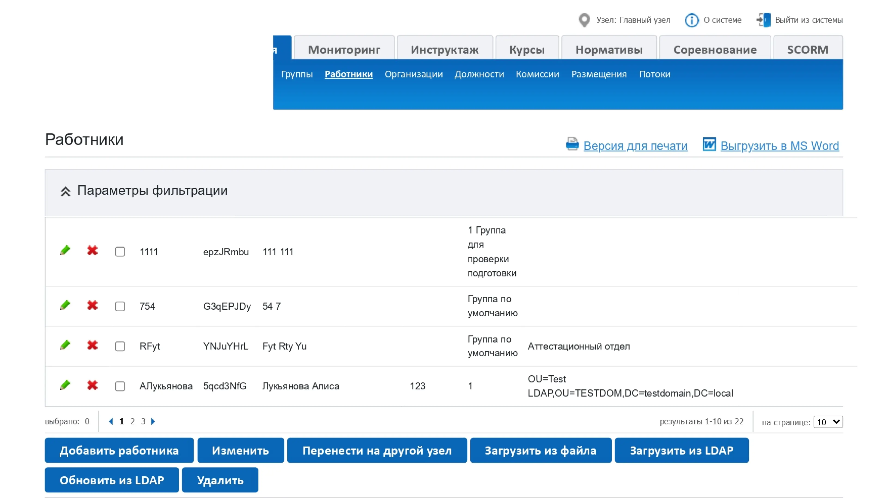
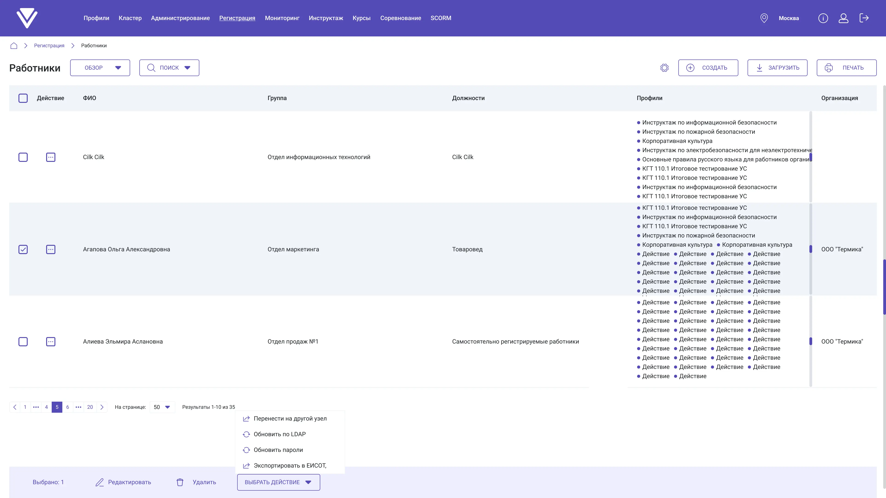
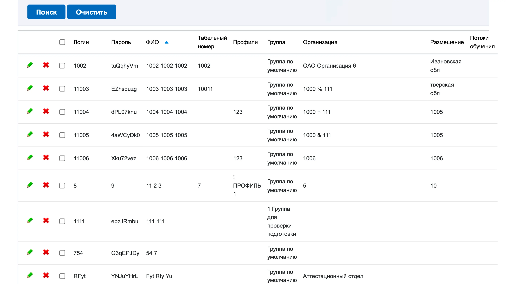
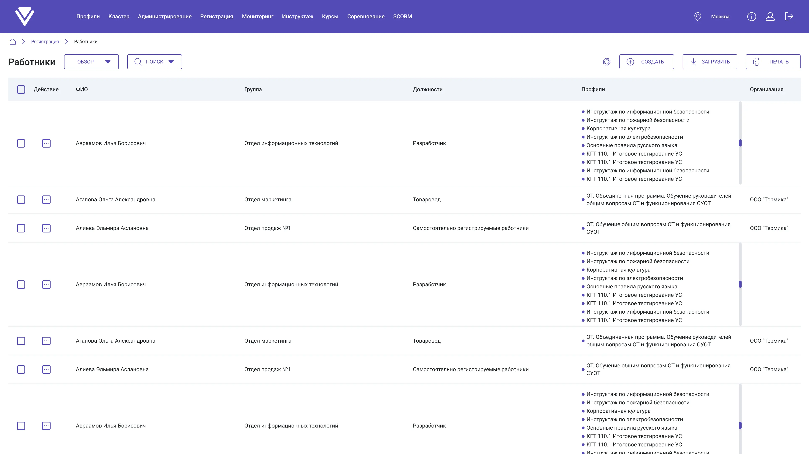
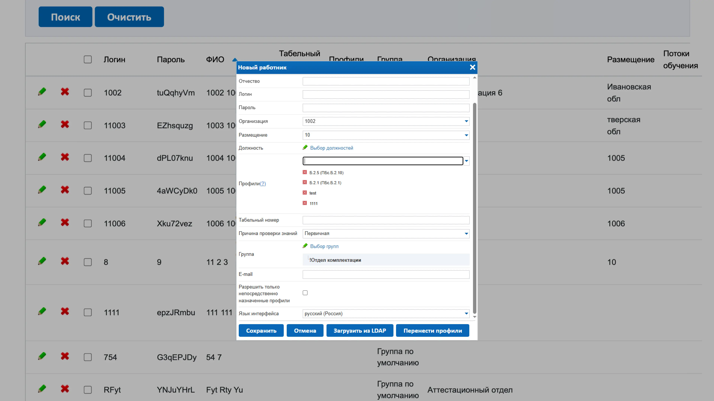
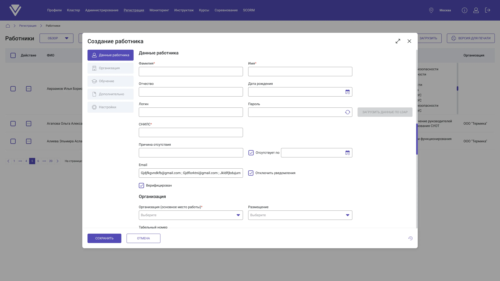
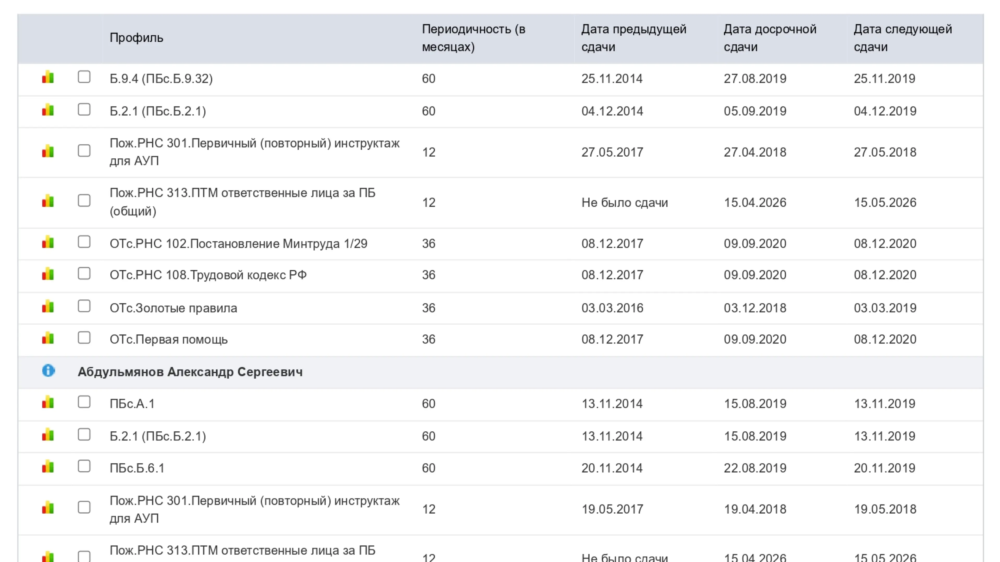
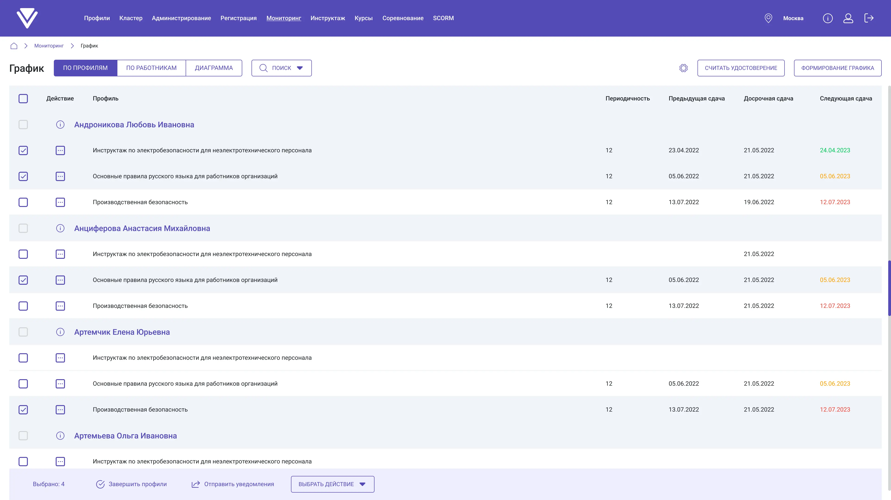

Редизайн Админки
Системный редизайн легаси-панели: 10 разделов, 50–100+ страниц, 3 в проде. Два типа пользователей с конфликтующими ожиданиями, работа в ограничениях легаси в связке с техлидом. Параллельно выстраивал процесс работы дизайн-отдела с нуля.

Обзор
Компания занимается предоставлением SaaS для организации обучения по промышленной безопасности и охране труда. Предприятия регистрируют сотрудников, назначают программы, проводят экзамены и смотрят результаты. Через админ панель проходит вся эта работа.
Интерфейс накапливался годами: все больше разделов, все больше данных в таблицах, все сложнее навигация. К началу редизайна: плотные таблицы с десятком столбцов, нагруженные фильтры, логика разделена по вкладкам внутри вкладок. Параллельно росла новая аудитория: компании, которые только начинали работать с системой. Для них старый интерфейс был непонятен с первого раза.
| Роль | Единственный дизайнер. Участвовал с самого начала редизайна |
| Ключевое взаимодействие | Технический лид: согласование решений с учетом ограничений реализации |
| Масштаб | 10 разделов, 50–100+ страниц |
| Запущено в прод | 3 раздела из 10 |
| Статус | В процессе, продолжается |
Пользователи
В системе два типа пользователей с противоположными ожиданиями.
Опытные пользователи
Работают с системой годами. Выстроили свой способ работы вокруг легаси-паттернов. Все кнопки всегда доступны, даже те, которые требуют предварительного выбора элемента. Опытный пользователь знал, куда нажать, без лишних шагов.
Страх«Сломают мой способ работы». Любое увеличение количества шагов воспринимается как регресс.
Новые пользователи
Приходят в систему без предыстории. Ориентируются на современные паттерны интерфейсов. Слишком много кнопок одновременно, непонятно что нажимать и в каком порядке. Нет визуальной подсказки: что нужно сделать сначала, чтобы действие стало доступным.
БольЛегаси создает барьер на входе: продукт воспринимается как сложный до того, как пользователь освоился.
Решение: прогрессивное раскрытие. Кнопки появляются после выбора элемента, а не висят постоянно. Шагов до действия стало больше, но каждый шаг теперь читается. Ожидал сопротивления опытных, и оно пришло. В первые недели после релиза вырастает поток в поддержку от тех, кто привык к старому порядку. Через пару месяцев обращения возвращаются к обычному уровню.
Подход
Не начинал с конкретных разделов. Первое, что я сделал, это начал строить дизайн-систему. Без нее редизайн десяти разделов превратился бы в десять разных интерфейсов, случайно оказавшихся в одном продукте.
Разделы брал в работу по частоте использования: сначала те, с которыми организаторы работают каждый день.
Легаси накладывало ограничения на каждое решение. Каждое нетривиальное решение обсуждал с техлидом: предлагал → разбирали ограничения → находили баланс между UX и стоимостью реализации.
Дизайн-решения
1. Прогрессивное раскрытие вместо «все сразу»
Снижение барьера для новых пользователей: краткосрочный рост обращений в поддержку, затем нормализация
В легаси все кнопки действий были доступны всегда, независимо от контекста. Новые пользователи терялись: непонятно что нажимать и зачем. Решение: кнопки появляются тогда, когда нужны, после выбора элемента или перехода к следующему шагу. Количество шагов увеличилось, но каждый шаг стал читаемым.


Альтернатива: сохранить «все всегда доступно», только визуально выделить приоритетные действия. Это не решало проблему новых пользователей, только маскировало ее.
2. Работники: от плотной таблицы к модульной карточке
Читаемость данных сотрудника, скорость работы с профилями
До: таблица с 10+ столбцами, в колонке «Профили»: текстовый список через запятую, вся информация в одной строке создает простыню, не воспринимаемую глазами. После: таблица с 5 ключевыми столбцами, которые можно настроить, профили как теги с точками, чтобы видеть начало и конец профиля. Окно создания работника: боковая навигация по секциям (Данные работника / Организация / Обучение / Дополнительно / Настройки). Каждая секция отдельный рубеж вместо одной бесконечной формы. Пользователь видит из чего состоит создание работника, где он пропустил или ввел некорректные данные и на каком этапе находится.




Альтернатива: визард, который дает ощущение прогресса. Это убирает визуальный хаос, пользователь видит на каком шаге находится, но увеличивается количество кликов и при одном неверно введенном символе придется постоянно переключаться между шагами
3. График: цветовая индикация и Диаграмма
Скорость обнаружения просроченных и предстоящих аттестаций, новая возможность видеть картину за год
До: плотная таблица, все даты одинакового цвета, нужно читать каждую строку, чтобы понять статус. После (таблица): цветовое кодирование прямо в ячейках дат (красный: просрочено, оранжевый: скоро, зеленый: в норме). После (Диаграмма): новый вид, которого не было в легаси. Временная шкала по месяцам, блоки сроков по строкам в виде Ганта. Позволяет видеть картину аттестаций за год без построчного чтения. Также добавлены модальные окна при клике: состояние обучения и результаты по профилю, детализация без перехода на новую страницу.


Альтернатива для Диаграммы: оставить только таблицу с фильтрами по статусу. Фильтры решают задачу найти что-то конкретное, но не помогают понять картину целиком.
Юзабилити-тестирование
Каждый раздел прогонял на прототипе перед тем, как уходил в разработку. Специально брал обоих: опытных, кто работает с системой годами, и новых. Важно было видеть реакцию на контрасте.
Работники: новые справлялись лучше, опытные адаптировались
Подтвержден ожидаемый паттерн адаптации
Новые пользователи справлялись значительно лучше, чем в легаси: форма с боковой навигацией снимала вопрос «а сколько еще полей?». Опытные сначала искали кнопки внизу страницы, потом начинали кликать строки таблицы, и это работало. Большинство адаптировались за несколько минут. Некоторые сказали прямо: «непривычно». Это подтвердило прогноз по росту обращений в поддержку после релиза.
Изменений в логику не вносил: ожидал именно такую реакцию.
График: цветовое кодирование считалось мгновенно, форма блоков: нет
Устранена неоднозначность в Диаграмме
Цветовая индикация дат работала сразу, никто не спрашивал что значит красный или оранжевый. Но часть участников не понимала разницу между прямоугольником и ромбом в Диаграмме. Добавил всплывающие подсказки и сделал легенду более очевидной.
Тестирование дало понимание, что необходимо исправить несколько UI-деталей до разработки.
Процесс отдела
Параллельно с продуктовой работой решал внутреннюю проблему: не было единого способа работы. Файлы в Figma хранились хаотично. Разработчики получали макеты без четкого статуса: отсюда правки «на ходу» уже в процессе разработки. Тестировщики не могли быстро найти нужный экран.
Описал процесс работы отдела в виде BPMN-схемы с двумя потоками: дизайнер и программист. Тестировщиков добавил позже.
| Шаг | Действие |
|---|---|
| 1 | Проверка задачи (новая или улучшение) → разработка макета |
| 2 | Размещение в статус «В работе» в Figma → согласование (3 дня на ответ) |
| 3 | Исправление замечаний (если есть) → перенос в «Релиз» |
| 4 | Обновление информации в Redmine → ожидание выпуска |
| 5 | Авторский контроль после релиза → завершение + обновление UI-кита |
Ключевая точка взаимодействия: согласование рабочего макета, разработчики проверяют реализуемость до того, как дизайн уходит в прод.
Результат: жалоб от разработчиков стало меньше, правки в процессе разработки прекратились. Тестировщики стали быстро находить нужный экран по стандартной структуре файлов. Статус каждого макета виден без лишних вопросов. Без выстроенного процесса двухлетний редизайн развалился бы по дороге. Там, где системы работы отдела не было, я выстраивал ее параллельно с продуктом.
Результат
3 раздела из 10 в продакшне. Проект продолжается.
| Сигнал | Что показывает |
|---|---|
| Обращения в поддержку | Краткосрочный рост после первого релиза (прогрессивное раскрытие), затем нормализация. Последующие разделы без значимых обращений |
| Обратная связь от коллег | Устные разговоры с людьми, которые работают в системе: стало удобнее ориентироваться |
| Наблюдение | В процессе работы видел, как пользователи справляются с новыми разделами быстрее, меньше неловких пауз при навигации |
Помимо продуктовой работы: выстроил процесс работы дизайн-отдела. Спроектировал раздел Аналитика: дашборд с метриками обучения: доля успешных экзаменов, количество экзаменов по направлениям, сравнение результатов по курсам, график успеваемости. Раздел ожидает разработки, находится в роадмапе.